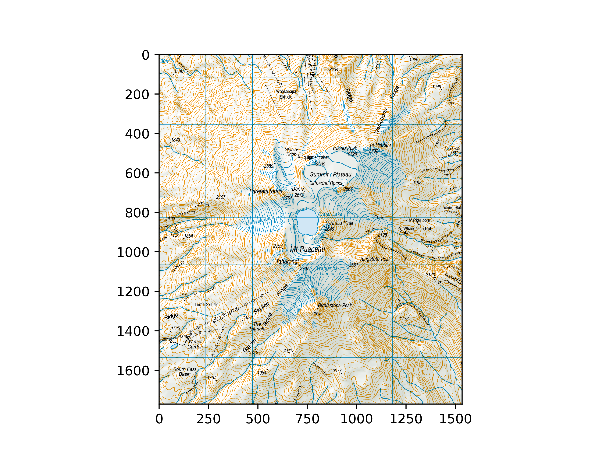
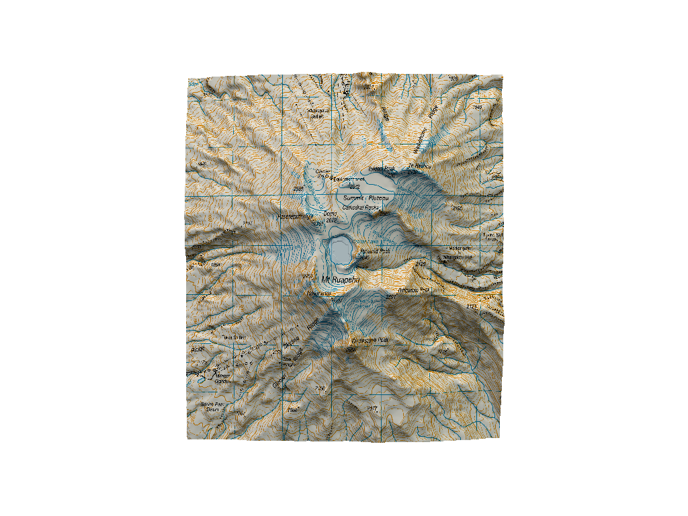
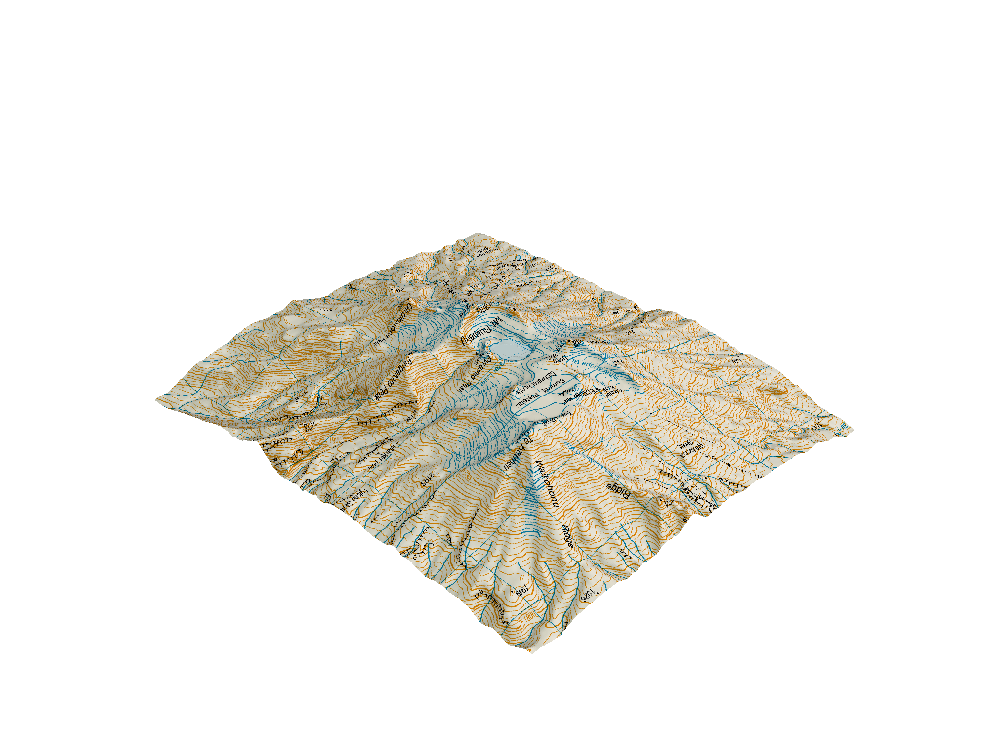
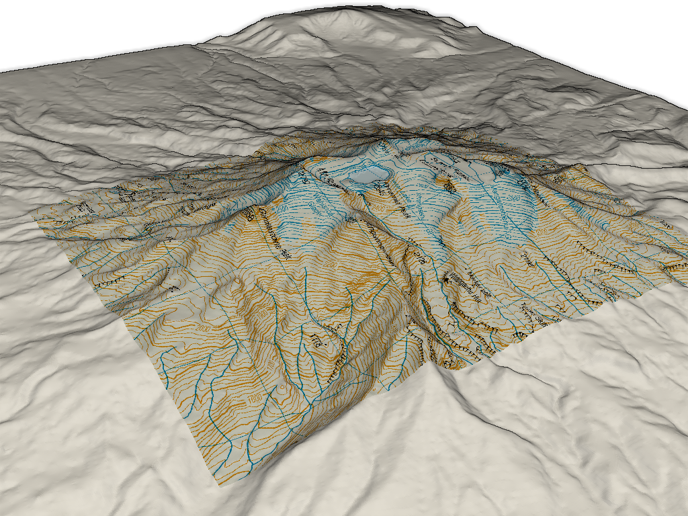

Note
Click here to download the full example code
Topographic Map¶
This is very similar to the Applying Textures example except it is focused on plotting aerial imagery from a GeoTIFF on top of some topagraphy mesh.
# sphinx_gallery_thumbnail_number = 4
import pyvista as pv
from pyvista import examples
# Load the elevation data as a surface
elevation = examples.download_crater_topo().warp_by_scalar()
# Load the topographic map from a GeoTiff
topo_map = examples.download_crater_imagery()
elevation
| Header | Data Arrays | ||||||||||||||||||||||||||||
|---|---|---|---|---|---|---|---|---|---|---|---|---|---|---|---|---|---|---|---|---|---|---|---|---|---|---|---|---|---|
|
|
Let’s inspect the imagery that we just loaded
import matplotlib.pyplot as plt
import matplotlib as mpl
mpl.rcParams['figure.dpi'] = 500
plt.imshow(topo_map.to_array())

Out:
<matplotlib.image.AxesImage object at 0x7f40ac514190>
Once you have a topography mesh loaded as a surface mesh
(we use a pyvista.StructuredGrid here) and an image loaded as a
pyvista.Texture object using the pyvista.read_texture()
method, then you can map that imagery to the surface mesh as follows:
# Bounds of the aerial imagery - given to us
bounds = (1818000,1824500,5645000,5652500,0,3000)
# Clip the elevation dataset to the map's extent
local = elevation.clip_box(bounds, invert=False)
# Apply texturing coordinates to associate the image to the surface
local.texture_map_to_plane(use_bounds=True, inplace=True)
Now display it! Note that the imagery is aligned as we expect.
local.plot(texture=topo_map, cpos="xy")

Out:
[(1821250.0, 5648752.5, 21483.021812796094),
(1821250.0, 5648752.5, 2084.1749267578125),
(0.0, 1.0, 0.0)]
And here is a 3D perspective!
local.plot(texture=topo_map)

Out:
[(1832449.9294716225, 5659952.429471622, 13284.10439838035),
(1821250.0, 5648752.5, 2084.1749267578125),
(0.0, 0.0, 1.0)]
We could also display the entire region by extracting the surrounding region and plotting the texture mapped local topography and the outside area
# Extract surrounding region from elevation data
surrounding = elevation.clip_box(bounds, invert=True)
# Display with a shading technique
p = pv.Plotter()
p.add_mesh(local, texture=topo_map)
p.add_mesh(surrounding, color="white")
p.enable_eye_dome_lighting()
p.camera_position = [(1831100., 5642142., 8168.),
(1820841., 5648745., 1104.),
(-0.435, 0.248, 0.865)]
p.show()

Out:
[(1831100.0, 5642142.0, 8168.0),
(1820841.0, 5648745.0, 1104.0),
(-0.43522768363338804, 0.24812980584156377, 0.8654527502135188)]
Total running time of the script: ( 0 minutes 28.239 seconds)